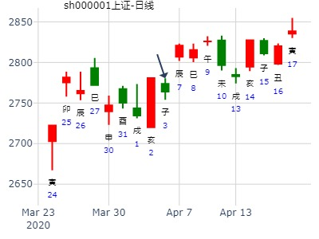

（统计：3个涨，1个跌。）
测2月7日大盘。网友
公历起卦时间：2014年2月6日
干支：甲午年 丙寅月 戊申日 （日空：寅卯）
艮宫：山火贲 (六合) 坎宫：地火明夷 (游魂)
六神 伏神 本 卦 变 卦
朱雀 官鬼丙寅木 ▅▅▅▅▅ ○→ 子孙癸酉金 ▅▅ ▅▅
青龙 妻财丙子水 ▅▅ ▅▅ 妻财癸亥水 ▅▅ ▅▅
玄武 兄弟丙戌土 ▅▅ ▅▅ 应 兄弟癸丑土 ▅▅ ▅▅ 世
白虎 子孙丙申金 妻财己亥水 ▅▅▅▅▅ 妻财己亥水 ▅▅▅▅▅
腾蛇 父母丙午火 兄弟己丑土 ▅▅ ▅▅ 兄弟己丑土 ▅▅ ▅▅
勾陈 官鬼己卯木 ▅▅▅▅▅ 世 官鬼己卯木 ▅▅▅▅▅ 应
先是日冲了官暗动低开，再化子福神涨。
备注：此卦有同时间卦，测丰乐种业，此处配图为大盘，不一定合适
贲之明夷，官动化子回头克。涨。周卦
公历起卦时间：2000年11月15日15时49分 (手工指定)
干支：庚辰年 丁亥月 丁丑日 戊申时 （日空：申酉）
艮宫：山火贲 (六合) 坎宫：地火明夷 (游魂)
六神 伏神 本 卦 变 卦
青龙 官鬼丙寅木 ▅▅▅▅▅ ○→ 子孙癸酉金 ▅▅ ▅▅
玄武 妻财丙子水 ▅▅ ▅▅ 妻财癸亥水 ▅▅ ▅▅
白虎 兄弟丙戌土 ▅▅ ▅▅ 应 兄弟癸丑土 ▅▅ ▅▅ 世
腾蛇 子孙丙申金 妻财己亥水 ▅▅▅▅▅ 妻财己亥水 ▅▅▅▅▅
勾陈 父母丙午火 兄弟己丑土 ▅▅ ▅▅ 兄弟己丑土 ▅▅ ▅▅
朱雀 官鬼己卯木 ▅▅▅▅▅ 世 官鬼己卯木 ▅▅▅▅▅ 应
上九：白贲，无咎。象曰：白贲无咎，上得志也。
贲之明夷，官化子，寅化酉，涨。大盘2009.6.15-19周卦
天天学习 2009-06-14 22:38:17
公历起卦时间：2009年6月14日22时36分 (在线摇卦)
干支：己丑年 庚午月 庚寅日 丁亥时 （日空：午未）
神煞：驿马－申 桃花－卯 日禄－申 贵人－丑，未
艮宫：山火贲 (六合) 坎宫：地火明夷 (游魂)
六神 伏神 本 卦 变 卦
腾蛇 官鬼丙寅木 ▅▅▅▅▅ ○→ 子孙癸酉金 ▅▅ ▅▅
勾陈 妻财丙子水 ▅▅ ▅▅ 妻财癸亥水 ▅▅ ▅▅
朱雀 兄弟丙戌土 ▅▅ ▅▅ 应 兄弟癸丑土 ▅▅ ▅▅ 世
青龙 子孙丙申金 妻财己亥水 ▅▅▅▅▅ 妻财己亥水 ▅▅▅▅▅
玄武 父母丙午火 兄弟己丑土 ▅▅ ▅▅ 兄弟己丑土 ▅▅ ▅▅
白虎 官鬼己卯木 ▅▅▅▅▅ 世 官鬼己卯木 ▅▅▅▅▅ 应
此处财爻月破日不生助，但这里好象主要矛盾是官化子。
贲之明夷，大跌。日卦。官化子。寅化酉。
看５．１７大盘涨跌如何？掌上起卦
男 占事：占5.17大盘涨跌
公历时间：2010年5月16日20时41分 星期日
干支：庚寅年 辛巳月 丙寅日 戊戌时 (旬空：戌亥)
神煞：驿马—申 桃花—卯 日禄—巳 贵人—酉，亥
艮宫：山火贲 坎宫：地火明夷（游魂）
六神 伏 神 【本 卦】 【变 卦】
青龙 ▅▅▅▅▅ 官鬼丙寅木 ○→ ▅▅ ▅▅ 子孙癸酉金
玄武 ▅▅ ▅▅ 妻财丙子水 ▅▅ ▅▅ 妻财癸亥水
白虎 ▅▅ ▅▅ 兄弟丙戌土 应 ▅▅ ▅▅ 兄弟癸丑土 世
螣蛇 子孙丙申金 ▅▅▅▅▅ 妻财己亥水 ▅▅▅▅▅ 妻财己亥水
勾陈 父母丙午火 ▅▅ ▅▅ 兄弟己丑土 ▅▅ ▅▅ 兄弟己丑土
朱雀 ▅▅▅▅▅ 官鬼己卯木 世 ▅▅▅▅▅ 官鬼己卯木 应
大跌。
马后炮：
1.莫非卯日冲走子孙酉金，无力克官鬼，故大跌。
而辰日合旺酉金。又涨。
寅日起卦时酉金为绝。弱。第二天又被冲走。
（关键点之1： 财是月破的）
（关键点之2：此卦经典验证为测日以当天流日为准，卯冲散酉金无力克官，大跌）
占事：派思股份16.2.25-17.2.24
起卦方式：手动摇卦 风生水起
公历时间：2016年2月25日8时9分
干 支：丙申年 庚寅月 丁丑日 甲辰时
旬 空：辰巳 午未 申酉 寅卯
艮宫：山火贲 坎宫：地火明夷（游魂）
六神 伏 神 【本 卦】 【变 卦】
青龙 ▄▄▄▄▄ 官鬼丙寅木 ○ ▄▄ ▄▄ 子孙癸酉金
玄武 ▄▄ ▄▄ 妻财丙子水 ▄▄ ▄▄ 妻财癸亥水
白虎 ▄▄ ▄▄ 兄弟丙戌土 应 ▄▄ ▄▄ 兄弟癸丑土 世
螣蛇 子孙丙申金 ▄▄▄▄▄ 妻财己亥水 ▄▄▄▄▄ 妻财己亥水
勾陈 父母丙午火 ▄▄ ▄▄ 兄弟己丑土 ▄▄ ▄▄ 兄弟己丑土
朱雀 ▄▄▄▄▄ 官鬼己卯木 世 ▄▄▄▄▄ 官鬼己卯木 应
主帖标题: 2011年03月14日---3月18日：上证指数一周趋势分析
出生：没填 年 性别：男 占事：没填
排卦：元亨利贞网六爻在线排盘系统 http://www.china95.net
公历起卦时间：2011年3月13日16时34分 (手工指定)
干支：辛卯年 辛卯月 丁卯日 戊申时 （日空：戌亥）
神煞：驿马－巳 桃花－子 日禄－午 贵人－酉，亥
艮宫：山火贲 (六合) 坎宫：地火明夷 (游魂)
六神 伏神 本 卦 变 卦
青龙 官鬼丙寅木 ▅▅▅▅▅ ○→ 子孙癸酉金 ▅▅ ▅▅
玄武 妻财丙子水 ▅▅ ▅▅ 妻财癸亥水 ▅▅ ▅▅
白虎 兄弟丙戌土 ▅▅ ▅▅ 应 兄弟癸丑土 ▅▅ ▅▅ 世
腾蛇 子孙丙申金 妻财己亥水 ▅▅▅▅▅ 妻财己亥水 ▅▅▅▅▅
勾陈 父母丙午火 兄弟己丑土 ▅▅ ▅▅ 兄弟己丑土 ▅▅ ▅▅
朱雀 官鬼己卯木 ▅▅▅▅▅ 世 官鬼己卯木 ▅▅▅▅▅ 应
1
公历时间：2020年3月14日18时25分 农历时间：庚子年 二月二十一日酉时
干 支：庚子年 己卯月 丙辰日 丁酉时
旬 空：辰巳 申酉 子丑 辰巳
神 煞：驿马─寅 桃花─酉 日禄─巳 贵人─酉，亥
中国预测网纳甲六爻排盘
艮宫：山火贲 坎宫：地火明夷（游魂）
六神 伏 神 【本 卦】 【变 卦】
青龙 ▄▄▄▄▄ 官鬼丙寅木 ○ ▄▄ ▄▄ 子孙癸酉金
玄武 ▄▄ ▄▄ 妻财丙子水 ▄▄ ▄▄ 妻财癸亥水
白虎 ▄▄ ▄▄ 兄弟丙戌土 应 ▄▄ ▄▄ 兄弟癸丑土 世
螣蛇 子孙丙申金 ▄▄▄▄▄ 妻财己亥水 ▄▄▄▄▄ 妻财己亥水
勾陈 父母丙午火 ▄▄ ▄▄ 兄弟己丑土 ▄▄ ▄▄ 兄弟己丑土
朱雀 ▄▄▄▄▄ 官鬼己卯木 世 ▄▄▄▄▄ 官鬼己卯木 应
本帖最后由 张三汉 于 2020-3-15 15:48 编辑
收集3月15日-19日上证指数周卦。
贲之明夷，益之颐，临之复，讼之否，未济之噬嗑 ，谦之升，豫之震，豫之损，鼎之大有，恒之小过，比之
1公历时间：2020年3月14日18时25分
干 支：庚子年 己卯月 丙辰日 丁酉时
旬 空：辰巳 申酉 子丑 辰巳
艮宫：山火贲 坎宫：地火明夷（游魂）
六神 伏 神 【本 卦】 【变 卦】
青龙 ▄▄▄▄▄ 官鬼丙寅木 ○ ▄▄ ▄▄ 子孙癸酉金
玄武 ▄▄ ▄▄ 妻财丙子水 ▄▄ ▄▄ 妻财癸亥水
白虎 ▄▄ ▄▄ 兄弟丙戌土 应 ▄▄ ▄▄ 兄弟癸丑土 世
螣蛇 子孙丙申金 ▄▄▄▄▄ 妻财己亥水 ▄▄▄▄▄ 妻财己亥水
勾陈 父母丙午火 ▄▄ ▄▄ 兄弟己丑土 ▄▄ ▄▄ 兄弟己丑土
朱雀 ▄▄▄▄▄ 官鬼己卯木 世 ▄▄▄▄▄ 官鬼己卯木 应
2
2020年3月13日12时39分
干 支：庚子年 己卯月 乙卯日 壬午时
旬 空：辰巳 申酉 子丑 申酉
神 煞：驿马─巳 桃花─子 日禄─卯 贵人─子，申
中国预测网纳甲六爻排盘
巽宫：风雷益 巽宫：山雷颐（游魂）
六神 伏 神 【本 卦】 【变 卦】
玄武 ▄▄▄▄▄ 兄弟辛卯木 应 ▄▄▄▄▄ 兄弟丙寅木
白虎 ▄▄▄▄▄ 子孙辛巳火 ○ ▄▄ ▄▄ 父母丙子水
螣蛇 ▄▄ ▄▄ 妻财辛未土 ▄▄ ▄▄ 妻财丙戌土 世
勾陈 官鬼辛酉金 ▄▄ ▄▄ 妻财庚辰土 世 ▄▄ ▄▄ 妻财庚辰土
朱雀 ▄▄ ▄▄ 兄弟庚寅木 ▄▄ ▄▄ 兄弟庚寅木
青龙 ▄▄▄▄▄ 父母庚子水 ▄▄▄▄▄ 父母庚子水 应
3
求测内容：3月16-20日走势？ 起卦方式：手工指定
公历：2020年03月13日09时45分
庚子年 己卯月 乙卯日 辛巳时 (日空：子丑)
卦名：坤宫2世卦：地泽临 之 坤宫1世六合卦：地雷复
卦身：主卦卯爻持世，卦身在四爻；阳爻持世，月卦身在丑
玄武 ▅ ▅ 子孙癸酉金 ▅ ▅ 子孙癸酉金
白虎 ▅ ▅ 妻财癸亥水 应 ▅ ▅ 妻财癸亥水
螣蛇 ▅ ▅ 兄弟癸丑土 ▅ ▅ 兄弟癸丑土 应
勾陈 ▅ ▅ 兄弟丁丑土 ▅ ▅ 兄弟庚辰土
朱雀 ▅▅▅ 官鬼丁卯木 世○→ ▅ ▅ 官鬼庚寅木
青龙 ▅▅▅ 父母丁巳火 ▅▅▅ 妻财庚子水 世
官鬼临日月，说明忧虑很重。今天大幅低开，卯泄财爻之力。
下周，卯木化退，说明会有有反弹，但是反弹也很微弱。只是换了个力气小的寅木来泄子水的力量了而已。午：跌。未：（未日冲二丑暗动，克财）大跌申：涨酉：涨戌：跌。
4..zhouyiworld.com/bbs/viewthread.phptid=299833&extra=page%3D1
占事：央行盘后定向降准了，下周A股走势？？？
公历起卦时间：2020年3月13日17时48分
干支：庚子年 己卯月 乙卯日 乙酉时 （日空：子丑）
神煞：驿马－巳 桃花－子 日禄－卯 贵人－子，申
离宫：天水讼 (游魂) 乾宫：天地否 (六合)
六神 伏神 本 卦 变 卦
玄武 子孙壬戌土 ▅▅▅▅▅ 子孙壬戌土 ▅▅▅▅▅ 应
白虎 妻财壬申金 ▅▅▅▅▅ 妻财壬申金 ▅▅▅▅▅
螣蛇 兄弟壬午火 ▅▅▅▅▅ 世 兄弟壬午火 ▅▅▅▅▅
勾陈 官鬼己亥水 兄弟戊午火 ▅▅ ▅▅ 父母乙卯木 ▅▅ ▅▅ 世
朱雀 子孙戊辰土 ▅▅▅▅▅ ○→ 兄弟乙巳火 ▅▅ ▅▅
青龙 父母戊寅木 ▅▅ ▅▅ 应 子孙乙未土 ▅▅ ▅▅ |
5
公历时间：2020年3月15日10时31分
干 支：庚子年 己卯月 丁巳日 乙巳时
旬 空：辰巳 申酉 子丑 寅卯
离宫：火水未济 巽宫：火雷噬嗑
六神 伏 神 【本 卦】 【变 卦】
青龙 ▄▄▄▄▄ 兄弟己巳火 应 ▄▄▄▄▄ 兄弟己巳火
玄武 ▄▄ ▄▄ 子孙己未土 ▄▄ ▄▄ 子孙己未土 世
白虎 ▄▄▄▄▄ 妻财己酉金 ▄▄▄▄▄ 妻财己酉金
螣蛇 官鬼己亥水 ▄▄ ▄▄ 兄弟戊午火 世 ▄▄ ▄▄ 子孙庚辰土
勾陈 ▄▄▄▄▄ 子孙戊辰土 ○ ▄▄ ▄▄ 父母庚寅木 应
朱雀 ▄▄ ▄▄ 父母戊寅木 × ▄▄▄▄▄ 官鬼庚子水
6本人周卦
手摇卦
公历时间：2020年3月15日15时4分
干 支：庚子年 己卯月 丁巳日 戊申时
旬 空：辰巳 申酉 子丑 寅卯
神 煞：驿马─亥 桃花─午 日禄─午 贵人─酉，亥
中国预测网纳甲六爻排盘
兑宫：地山谦 震宫：地风升
六神 伏 神 【本 卦】 【变 卦】
青龙 ▄▄ ▄▄ 兄弟癸酉金 ▄▄ ▄▄ 兄弟癸酉金
玄武 ▄▄ ▄▄ 子孙癸亥水 世 ▄▄ ▄▄ 子孙癸亥水
白虎 ▄▄ ▄▄ 父母癸丑土 ▄▄ ▄▄ 父母癸丑土 世
螣蛇 ▄▄▄▄▄ 兄弟丙申金 ▄▄▄▄▄ 兄弟辛酉金
勾陈 妻财丁卯木 ▄▄ ▄▄ 官鬼丙午火 应× ▄▄▄▄▄ 子孙辛亥水
朱雀 ▄▄ ▄▄ 父母丙辰土 ▄▄ ▄▄ 父母辛丑土 应
色子卦
公历时间：2020年3月15日15时18分
干 支：庚子年 己卯月 丁巳日 戊申时
旬 空：辰巳 申酉 子丑 寅卯
震宫：雷地豫（六合） 震宫：震为雷（六冲）
六神 伏 神 【本 卦】 【变 卦】
青龙 ▄▄ ▄▄ 妻财庚戌土 ▄▄ ▄▄ 妻财庚戌土 世
玄武 ▄▄ ▄▄ 官鬼庚申金 ▄▄ ▄▄ 官鬼庚申金
白虎 ▄▄▄▄▄ 子孙庚午火 应 ▄▄▄▄▄ 子孙庚午火
螣蛇 ▄▄ ▄▄ 兄弟乙卯木 ▄▄ ▄▄ 妻财庚辰土 应
勾陈 ▄▄ ▄▄ 子孙乙巳火 ▄▄ ▄▄ 兄弟庚寅木
朱雀 父母庚子水 ▄▄ ▄▄ 妻财乙未土 世× ▄▄▄▄▄ 父母庚子水
公历时间：2020年3月15日15时19分
干 支：庚子年 己卯月 丁巳日 戊申时
旬 空：辰巳 申酉 子丑 寅卯
中国预测网纳甲六爻排盘
震宫：雷地豫（六合） 艮宫：山泽损
六神 伏 神 【本 卦】 【变 卦】
青龙 ▄▄ ▄▄ 妻财庚戌土 × ▄▄▄▄▄ 兄弟丙寅木 应
玄武 ▄▄ ▄▄ 官鬼庚申金 ▄▄ ▄▄ 父母丙子水
白虎 ▄▄▄▄▄ 子孙庚午火 应○ ▄▄ ▄▄ 妻财丙戌土
螣蛇 ▄▄ ▄▄ 兄弟乙卯木 ▄▄ ▄▄ 妻财丁丑土 世
勾陈 ▄▄ ▄▄ 子孙乙巳火 × ▄▄▄▄▄ 兄弟丁卯木
朱雀 父母庚子水 ▄▄ ▄▄ 妻财乙未土 世× ▄▄▄▄▄ 子孙丁巳火
色子卦说明，七个八面色子，五红，两黑，一红一黑为一组，红为上卦，黑为下卦形成主卦，三个红的色子产生三个动爻，另外一组红黑做标记作为变卦，七个色子同时掷出，成两卦。主卦与动爻成卦，可能是三动爻，二动爻，也可能是一动多，很少能有没动爻。而主卦与变卦成卦则多是多动爻居多。且四五动爻的居多。
动爻色子是这样注记的，八面中的六面标记一动到六动，另两面标记零为没动爻，如果有一样动爻的只记一次，223动爻只记23，111记1 ，025记25.
7.7 http://bbs.64gua.com/forum.phpm ... &extra=page%3D1
男 占事：3.16-3.20大盘走势？
公历起卦时间：2020年3月15日12时39分 (手工指定)
干支：庚子年 己卯月 丁巳日 丙午时 （日空：子丑）
离宫：火风鼎 乾宫：火天大有 (归魂)
六神 伏神 本 卦 变 卦
青龙 兄弟己巳火 ▅▅▅▅▅ 兄弟己巳火 ▅▅▅▅▅ 应
玄武 子孙己未土 ▅▅ ▅▅ 应 子孙己未土 ▅▅ ▅▅
白虎 妻财己酉金 ▅▅▅▅▅ 妻财己酉金 ▅▅▅▅▅
螣蛇 妻财辛酉金 ▅▅▅▅▅ 子孙甲辰土 ▅▅▅▅▅ 世
勾陈 官鬼辛亥水 ▅▅▅▅▅ 世 父母甲寅木 ▅▅▅▅▅
朱雀 父母己卯木 子孙辛丑土 ▅▅ ▅▅ ╳→ 官鬼甲子水 ▅▅▅▅▅
子孙空亡，化空。下周不能出空。
财爻酉金月破，日建又克之。卦中无动来生。
下周情况属于弱势行情。预计涨少跌多。
9。9
公历时间：2020年3月15日19时32分
干 支：庚子年 己卯月 丁巳日 庚戌时
旬 空：辰巳 申酉 子丑 寅卯
震宫：雷风恒 兑宫：雷山小过（游魂）
六神 伏 神 【本 卦】 【变 卦】
青龙 ▄▄ ▄▄ 妻财庚戌土 应 ▄▄ ▄▄ 妻财庚戌土
玄武 ▄▄ ▄▄ 官鬼庚申金 ▄▄ ▄▄ 官鬼庚申金
白虎 ▄▄▄▄▄ 子孙庚午火 ▄▄▄▄▄ 子孙庚午火 世
螣蛇 ▄▄▄▄▄ 官鬼辛酉金 世 ▄▄▄▄▄ 官鬼丙申金
勾陈 兄弟庚寅木 ▄▄▄▄▄ 父母辛亥水 ○ ▄▄ ▄▄ 子孙丙午火
朱雀 ▄▄ ▄▄ 妻财辛丑土 ▄▄ ▄▄ 妻财丙辰土 应
10 http://bbs.64gua.com/forum.phpm ... &extra=page%3D1
公历时间：2020年3月15日7时55分
干 支：庚子年 己卯月 丁巳日 甲辰时
旬 空：辰巳 申酉 子丑 寅卯
坤宫：水地比（归魂） 坎宫：坎为水（六冲）
六神 【本 卦】 【变 卦】
青龙 ▄▄ ▄▄ 妻财戊子水 应 ▄▄ ▄▄ 妻财戊子水 世
玄武 ▄▄▄▄▄ 兄弟戊戌土 ▄▄▄▄▄ 兄弟戊戌土
白虎 ▄▄ ▄▄ 子孙戊申金 ▄▄ ▄▄ 子孙戊申金
螣蛇 ▄▄ ▄▄ 官鬼乙卯木 世 ▄▄ ▄▄ 父母戊午火 应
勾陈 ▄▄ ▄▄ 父母乙巳火 × ▄▄▄▄▄ 兄弟戊辰土
朱雀 ▄▄ ▄▄ 兄弟乙未土 ▄▄ ▄▄ 官鬼戊寅木
父母发动，克制子孙，午未跌，申酉日子孙值班，挨宰大跌。（莫非静爻怕值班，挨宰？）
11。公历时间：2020年3月16日8时52分
干 支：庚子年 己卯月 戊午日 丙辰时
旬 空：辰巳 申酉 子丑 子丑
中国预测网纳甲六爻排盘
巽宫：山风蛊（归魂） 离宫：火风鼎
六神 伏 神 【本 卦】 【变 卦】
朱雀 ▄▄▄▄▄ 兄弟丙寅木 应 ▄▄▄▄▄ 子孙己巳火
青龙 子孙辛巳火 ▄▄ ▄▄ 父母丙子水 ▄▄ ▄▄ 妻财己未土 应
玄武 ▄▄ ▄▄ 妻财丙戌土 × ▄▄▄▄▄ 官鬼己酉金
白虎 ▄▄▄▄▄ 官鬼辛酉金 世 ▄▄▄▄▄ 官鬼辛酉金
螣蛇 ▄▄▄▄▄ 父母辛亥水 ▄▄▄▄▄ 父母辛亥水 世
勾陈 ▄▄ ▄▄ 妻财辛丑土 ▄▄ ▄▄ 妻财辛丑土
大道断曰：月建克财，日令生财，不宜财爻化官，先涨后跌。
（财化鬼，一路跌）
再人上证指数4月27-30日行情预测？
起卦时间：2015年04月26日16时43分
起卦方式：手摇硬币起卦
干支：乙未年 庚辰月 壬申日 戊申时
旬空：辰巳 申酉 戌亥 寅卯
艮宫：山火贲（六合） 坎宫：地火明夷（游魂）
白虎 ▅▅▅▅▅ 官鬼丙寅木 ○→ ▅▅ ▅▅ 子孙癸酉金
滕蛇 ▅▅ ▅▅ 妻财丙子水 ▅▅ ▅▅ 妻财癸亥水
勾陈 ▅▅ ▅▅ 兄弟丙戌土 应 ▅▅ ▅▅ 兄弟癸丑土 世
朱雀 子孙丙申金 ▅▅▅▅▅ 妻财己亥水 ▅▅▅▅▅ 妻财己亥水
青龙 父母丙午火 ▅▅ ▅▅ 兄弟己丑土 ▅▅ ▅▅ 兄弟己丑土
玄武 ▅▅▅▅▅ 官鬼己卯木 世 ▅▅▅▅▅ 官鬼己卯木 应
白贲。
主帖标题: 2020.04.03日上证指数擂台赛第十三场第5局 Z方（日测参赛贴）
replyreload += ',' + 12915741;
公历起卦时间：2020年4月3日1时28分 (手工指定)
干支：庚子年 己卯月 丙子日 己丑时 （日空：申酉）
艮宫：山火贲 (六合) 坎宫：地火明夷 (游魂)
六神 伏神 本 卦 变 卦
青龙 官鬼丙寅木 ▅▅▅▅▅ ○→ 子孙癸酉金 ▅▅ ▅▅
玄武 妻财丙子水 ▅▅ ▅▅ 妻财癸亥水 ▅▅ ▅▅
白虎 兄弟丙戌土 ▅▅ ▅▅ 应 兄弟癸丑土 ▅▅ ▅▅ 世
螣蛇 子孙丙申金 妻财己亥水 ▅▅▅▅▅ 妻财己亥水 ▅▅▅▅▅
勾陈 父母丙午火 兄弟己丑土 ▅▅ ▅▅ 兄弟己丑土 ▅▅ ▅▅
朱雀 官鬼己卯木 ▅▅▅▅▅ 世 官鬼己卯木 ▅▅▅▅▅ 应
上九：白贲，无咎。象曰：白贲无咎，上得志也。

贲之明夷，大跌。日卦。官化子。寅化酉。
看５．１７大盘涨跌如何？掌上起卦
男 占事：占5.17大盘涨跌
公历时间：2010年5月16日20时41分 星期日
干支：庚寅年 辛巳月 丙寅日 戊戌时 (旬空：戌亥)
神煞：驿马—申 桃花—卯 日禄—巳 贵人—酉，亥
艮宫：山火贲 坎宫：地火明夷（游魂）
六神 伏 神 【本 卦】 【变 卦】
青龙 ▅▅▅▅▅ 官鬼丙寅木 ○→ ▅▅ ▅▅ 子孙癸酉金
玄武 ▅▅ ▅▅ 妻财丙子水 ▅▅ ▅▅ 妻财癸亥水
白虎 ▅▅ ▅▅ 兄弟丙戌土 应 ▅▅ ▅▅ 兄弟癸丑土 世
螣蛇 子孙丙申金 ▅▅▅▅▅ 妻财己亥水 ▅▅▅▅▅ 妻财己亥水
勾陈 父母丙午火 ▅▅ ▅▅ 兄弟己丑土 ▅▅ ▅▅ 兄弟己丑土
朱雀 ▅▅▅▅▅ 官鬼己卯木 世 ▅▅▅▅▅ 官鬼己卯木 应
大跌。
马后炮：
1.莫非卯日冲走子孙酉金，无力克官鬼，故大跌。
而辰日合旺酉金。又涨。
寅日起卦时酉金为绝。弱。第二天又被冲走。
（关键点之1： 财是月破的）
（关键点之2：此卦经典验证为测日以当天流日为准，卯冲散酉金无力克官，大跌）
占事：5月21-25日大盘涨跌？
排卦：元亨利贞网六爻在线排盘系统 http://www.china95.net
公历起卦时间：2012年5月18日16时4分 (手工指定)
干支：壬辰年 乙巳月 己卯日 壬申时 （日空：申酉）
神煞：驿马－巳 桃花－子 日禄－午 贵人－子，申
艮宫：山火贲 (六合) 坎宫：地火明夷 (游魂)
六神 伏神 本 卦 变 卦
勾陈 官鬼丙寅木 ▅▅▅▅▅ ○→ 子孙癸酉金 ▅▅ ▅▅
朱雀 妻财丙子水 ▅▅ ▅▅ 妻财癸亥水 ▅▅ ▅▅
青龙 兄弟丙戌土 ▅▅ ▅▅ 应 兄弟癸丑土 ▅▅ ▅▅ 世
玄武 子孙丙申金 妻财己亥水 ▅▅▅▅▅ 妻财己亥水 ▅▅▅▅▅
白虎 父母丙午火 兄弟己丑土 ▅▅ ▅▅ 兄弟己丑土 ▅▅ ▅▅
腾蛇 官鬼己卯木 ▅▅▅▅▅ 世 官鬼己卯木 ▅▅▅▅▅ 应
主帖标题: 5月23日沪市
公历时间：2016年5月20日16时28分
干 支：丙申年 癸巳月 壬寅日 戊申时
旬 空：辰巳 午未 (辰巳) 寅卯
艮宫：山火贲 坎宫：地火明夷（游魂）
六神 伏 神 【本 卦】 【变 卦】
白虎 ▄▄▄▄▄ 官鬼丙寅木 O-> ▄▄ ▄▄ 子孙癸酉金
螣蛇 ▄▄ ▄▄ 妻财丙子水 ▄▄ ▄▄ 妻财癸亥水
勾陈 ▄▄ ▄▄ 兄弟丙戌土 应 ▄▄ ▄▄ 兄弟癸丑土 世
朱雀 子孙丙申金 ▄▄▄▄▄ 妻财己亥水 ▄▄▄▄▄ 妻财己亥水
青龙 父母丙午火 ▄▄ ▄▄ 兄弟己丑土 ▄▄ ▄▄ 兄弟己丑土
玄武 ▄▄▄▄▄ 官鬼己卯木 世 ▄▄▄▄▄ 官鬼己卯木 应
弱鬼化出子孙克制为真空，无耐财也衰弱。偏向收涨。
贲之明夷，官化子，寅化酉，涨。大盘2009.6.15-19周卦
天天学习 2009-06-14 22:38:17
公历起卦时间：2009年6月14日22时36分 (在线摇卦)
干支：己丑年 庚午月 庚寅日 丁亥时 （日空：午未）
神煞：驿马－申 桃花－卯 日禄－申 贵人－丑，未
艮宫：山火贲 (六合) 坎宫：地火明夷 (游魂)
六神 伏神 本 卦 变 卦
腾蛇 官鬼丙寅木 ▅▅▅▅▅ ○→ 子孙癸酉金 ▅▅ ▅▅
勾陈 妻财丙子水 ▅▅ ▅▅ 妻财癸亥水 ▅▅ ▅▅
朱雀 兄弟丙戌土 ▅▅ ▅▅ 应 兄弟癸丑土 ▅▅ ▅▅ 世
青龙 子孙丙申金 妻财己亥水 ▅▅▅▅▅ 妻财己亥水 ▅▅▅▅▅
玄武 父母丙午火 兄弟己丑土 ▅▅ ▅▅ 兄弟己丑土 ▅▅ ▅▅
白虎 官鬼己卯木 ▅▅▅▅▅ 世 官鬼己卯木 ▅▅▅▅▅ 应
此处财爻月破日不生助，但这里好象主要矛盾是官化子。
“每日一卦测大盘” 2015年6月5日周五走势！
公历起卦时间：2015年6月4日20时31分
干支: 乙未年辛巳月辛亥日 (旬空: 寅卯 )
山火贲 地火明夷(游魂)
六神 伏神 本 卦 变 卦
腾蛇 ▅▅▅▅▅ 官鬼寅木 Ｏ→ ▅▅ ▅▅ 子孙酉金
勾陈 ▅▅ ▅▅ 妻财子水 ▅▅ ▅▅ 妻财亥水
朱雀 ▅▅ ▅▅ 兄弟戌土 应 ▅▅ ▅▅ 兄弟丑土 世
青龙 子孙申金▅▅▅▅▅ 妻财亥水 ▅▅▅▅▅ 妻财亥水
玄武 父母午火▅▅ ▅▅ 兄弟丑土 ▅▅ ▅▅ 兄弟丑土
白虎 ▅▅▅▅▅ 官鬼卯木 世 ▅▅▅▅▅ 官鬼卯木 应
上九：白贲，无咎。
测002326永太科技2015年走势 ytang
公历起卦时间：2015年6月7日17时40分 (手工指定)
干支：乙未年?壬午月 甲寅日 癸酉时 （日空：子丑）
艮宫：山火贲 (六合) 坎宫：地火明夷?(游魂)
六神 伏神 本 卦 变 卦
玄武 官鬼丙寅木 ▅▅▅▅▅ ○→ 子孙癸酉金 ▅▅ ▅▅
白虎 妻财丙子水 ▅▅ ▅▅ 妻财癸亥水 ▅▅ ▅▅
腾蛇 兄弟丙戌土 ▅▅ ▅▅ 应 兄弟癸丑土 ▅▅ ▅▅ 世
勾陈?子孙丙申金 妻财己亥水 ▅▅▅▅▅ 妻财己亥水 ▅▅▅▅▅
朱雀 父母丙午火 兄弟己丑土 ▅▅ ▅▅ 兄弟己丑土 ▅▅ ▅▅
青龙 官鬼己卯木 ▅▅▅▅▅ 世 官鬼己卯木 ▅▅▅▅▅ 应
上九：白贲，无咎。象曰：白贲无咎，上得志也。
午月同样月破。大跌。未月还是大跌。
用神子空，反而应到午月破时见顶。
主帖标题: 持有个股中报会预增吗？新方向
占事:持有个股中报会预增吗？
起卦方式：手工指定
公历时间：2020年7月9日18时36分
干 支：庚子年 癸未月 癸丑日 辛酉时
旬 空：辰巳 申酉 寅卯 子丑
艮宫：山火贲（六合） 坎宫：地火明夷（游魂）
六神 伏 神 【本 卦】 【变 卦】
白虎 ▄▄▄▄▄ 官鬼丙寅木 O-> ▄▄ ▄▄ 子孙癸酉金
螣蛇 ▄▄ ▄▄ 妻财丙子水 ▄▄ ▄▄ 妻财癸亥水
勾陈 ▄▄ ▄▄ 兄弟丙戌土 应 ▄▄ ▄▄ 兄弟癸丑土 世
朱雀 子孙丙申金 ▄▄▄▄▄ 妻财己亥水 ▄▄▄▄▄ 妻财己亥水
青龙 父母丙午火 ▄▄ ▄▄ 兄弟己丑土 ▄▄ ▄▄ 兄弟己丑土
玄武 ▄▄▄▄▄ 官鬼己卯木 世 ▄▄▄▄▄ 官鬼己卯木 应
断：会预增
姓名：姓名 出生年份：2020年 性别：男 占事:持有个股中报会预增吗？
起卦方式：电脑自动 (周易世界 www.zhouyiworld.com)
公历时间：2020年7月9日18时39分
干 支：庚子年 癸未月 癸丑日 辛酉时
旬 空：辰巳 申酉 寅卯 子丑
神 煞：驿马─亥 桃花─午 日禄─子 贵人─巳，卯
震宫：泽风大过（游魂） 艮宫：山天大畜
六神 伏 神 【本 卦】 【变 卦】
白虎 ▄▄ ▄▄ 妻财丁未土 X-> ▄▄▄▄▄ 兄弟丙寅木
螣蛇 ▄▄▄▄▄ 官鬼丁酉金 O-> ▄▄ ▄▄ 父母丙子水 应
勾陈 子孙庚午火 ▄▄▄▄▄ 父母丁亥水 世O-> ▄▄ ▄▄ 妻财丙戌土
朱雀 ▄▄▄▄▄ 官鬼辛酉金 ▄▄▄▄▄ 妻财甲辰土
青龙 兄弟庚寅木 ▄▄▄▄▄ 父母辛亥水 ▄▄▄▄▄ 兄弟甲寅木 世
玄武 ▄▄ ▄▄ 妻财辛丑土 应X-> ▄▄▄▄▄ 父母甲子水
应爻临日，会预增
占事:持有个股中报会预增吗？
起卦方式：电脑自动 (周易世界 www.zhouyiworld.com)
公历时间：2020年7月9日18时40分
干 支：庚子年 癸未月 癸丑日 辛酉时
旬 空：辰巳 申酉 寅卯 子丑
乾宫：天风姤 艮宫：山火贲（六合）
六神 伏 神 【本 卦】 【变 卦】
白虎 ▄▄▄▄▄ 父母壬戌土 ▄▄▄▄▄ 妻财丙寅木
螣蛇 ▄▄▄▄▄ 兄弟壬申金 O-> ▄▄ ▄▄ 子孙丙子水
勾陈 ▄▄▄▄▄ 官鬼壬午火 应O-> ▄▄ ▄▄ 父母丙戌土 应
朱雀 ▄▄▄▄▄ 兄弟辛酉金 ▄▄▄▄▄ 子孙己亥水
青龙 妻财甲寅木 ▄▄▄▄▄ 子孙辛亥水 O-> ▄▄ ▄▄ 父母己丑土
玄武 ▄▄ ▄▄ 父母辛丑土 世X-> ▄▄▄▄▄ 妻财己卯木 世
断：会预增
---、
事:预增消息何时公布？（董秘回复7.15日之前公布）
起卦方式：电脑自动 (周易世界 www.zhouyiworld.com)
公历时间：2020年7月9日18时42分
干 支：庚子年 癸未月 癸丑日 辛酉时
旬 空：辰巳 申酉 寅卯 子丑
神 煞：驿马─亥 桃花─午 日禄─子 贵人─巳，卯
震宫：雷风恒 艮宫：山天大畜
六神 伏 神 【本 卦】 【变 卦】
白虎 ▄▄ ▄▄ 妻财庚戌土 应X-> ▄▄▄▄▄ 兄弟丙寅木
螣蛇 ▄▄ ▄▄ 官鬼庚申金 ▄▄ ▄▄ 父母丙子水 应
勾陈 ▄▄▄▄▄ 子孙庚午火 O-> ▄▄ ▄▄ 妻财丙戌土
朱雀 ▄▄▄▄▄ 官鬼辛酉金 世 ▄▄▄▄▄ 妻财甲辰土
青龙 兄弟庚寅木 ▄▄▄▄▄ 父母辛亥水 ▄▄▄▄▄ 兄弟甲寅木 世
玄武 ▄▄ ▄▄ 妻财辛丑土 X-> ▄▄▄▄▄ 父母甲子水
姓名：姓名 出生年份：2020年 性别：男
占事:预增消息何时公布？（董秘回复7.15日之前公布）
起卦方式：电脑自动 (周易世界 www.zhouyiworld.com)
公历时间：2020年7月9日18时46分 农历时间：庚子年 五月十九日酉时
干 支：庚子年 癸未月 癸丑日 辛酉时
旬 空：辰巳 申酉 寅卯 子丑
艮宫：艮为山（六冲） 乾宫：山地剥
六神 【本 卦】 【变 卦】
白虎 ▄▄▄▄▄ 官鬼丙寅木 世 ▄▄▄▄▄ 官鬼丙寅木
螣蛇 ▄▄ ▄▄ 妻财丙子水 ▄▄ ▄▄ 妻财丙子水 世
勾陈 ▄▄ ▄▄ 兄弟丙戌土 ▄▄ ▄▄ 兄弟丙戌土
朱雀 ▄▄▄▄▄ 子孙丙申金 应O-> ▄▄ ▄▄ 官鬼乙卯木
青龙 ▄▄ ▄▄ 父母丙午火 ▄▄ ▄▄ 父母乙巳火 应
玄武 ▄▄ ▄▄ 兄弟丙辰土 ▄▄ ▄▄ 兄弟乙未土
消息以父母爻为用神，明天周五寅日公布。
主帖标题: 应一位老师之请占出个股周卦
公历时间：2021年7月4日7时58分 农历时间：辛丑年 五月二十五日辰时
干 支：辛丑年 甲午月 癸丑日 丙辰时
旬 空：辰巳 辰巳 寅卯 子丑
神 煞：驿马─亥 桃花─午 日禄─子 贵人─巳，卯
中国预测网纳甲六爻排盘
艮宫：山火贲 坎宫：地火明夷（游魂）
六神 伏 神 【本 卦】 【变 卦】
白虎 ▄▄▄▄▄ 官鬼丙寅木 ○ ▄▄ ▄▄ 子孙癸酉金
螣蛇 ▄▄ ▄▄ 妻财丙子水 ▄▄ ▄▄ 妻财癸亥水
勾陈 ▄▄ ▄▄ 兄弟丙戌土 应 ▄▄ ▄▄ 兄弟癸丑土 世
朱雀 子孙丙申金 ▄▄▄▄▄ 妻财己亥水 ▄▄▄▄▄ 妻财己亥水
青龙 父母丙午火 ▄▄ ▄▄ 兄弟己丑土 ▄▄ ▄▄ 兄弟己丑土
玄武 ▄▄▄▄▄ 官鬼己卯木 世 ▄▄▄▄▄ 官鬼己卯木 应
注：此卦无股票名
占事：包钢稀土未申酉戌表现？
起卦方式：电脑自动
起卦时间：2014年08月04日15时11分
干支：甲午年 辛未月 丁未日 戊申时
旬空：辰巳 戌亥 寅卯 寅卯?
六神 ?伏神? 艮宫：山火贲（六合） 坎宫：地火明夷（游魂）
【本 卦】 【变 卦】
青龙 ▅▅▅▅▅ 官鬼丙寅木 ○→ ▅▅ ▅▅ 子孙癸酉金
玄武 ▅▅ ▅▅ 妻财丙子水 ▅▅ ▅▅ 妻财癸亥水
白虎 ▅▅ ▅▅ 兄弟丙戌土 应 ▅▅ ▅▅ 兄弟癸丑土 世
滕蛇 子孙丙申金 ▅▅▅▅▅ 妻财己亥水 ▅▅▅▅▅ 妻财己亥水
勾陈 父母丙午火 ▅▅ ▅▅ 兄弟己丑土 ▅▅ ▅▅ 兄弟己丑土
朱雀 ▅▅▅▅▅ 官鬼己卯木 世 ▅▅▅▅▅ 官鬼己卯木 应
国庆节前有红包行情吗？ 燕山月
2014年9月28日
壬寅日干支：甲午年 癸酉月 壬寅日 庚戌时 （日空：辰巳）
神煞：驿马－申 桃花－卯 日禄－亥 贵人－卯，巳
艮宫：山火贲 (六合) 坎宫：地火明夷 (游魂)
六神 伏神 本 卦 变 卦
白虎 官鬼丙寅木 ▅▅▅▅▅ ○→ 子孙癸酉金 ▅▅ ▅▅
腾蛇 妻财丙子水 ▅▅ ▅▅ 妻财癸亥水 ▅▅ ▅▅
勾陈 兄弟丙戌土 ▅▅ ▅▅ 应 兄弟癸丑土 ▅▅ ▅▅ 世
朱雀 子孙丙申金 妻财己亥水 ▅▅▅▅▅ 妻财己亥水 ▅▅▅▅▅
青龙 父母丙午火 兄弟己丑土 ▅▅ ▅▅ 兄弟己丑土 ▅▅ ▅▅
玄武 官鬼己卯木 ▅▅▅▅▅ 世 官鬼己卯木 ▅▅▅▅▅ 应
新联电子10.29收盘走势
公历起卦时间：2021年10月29日6时59分 (电脑自动)
干支：辛丑年 戊戌月 庚戌日 己卯时 （日空：寅卯）
神煞：驿马－申 桃花－卯 日禄－申 贵人－丑，未
艮宫：山火贲 (六合) 坎宫：地火明夷 (游魂)
六神 伏神 本 卦 变 卦
螣蛇 官鬼丙寅木 ▅▅▅▅▅ ○→ 子孙癸酉金 ▅▅ ▅▅
勾陈 妻财丙子水 ▅▅ ▅▅ 妻财癸亥水 ▅▅ ▅▅
朱雀 兄弟丙戌土 ▅▅ ▅▅ 应 兄弟癸丑土 ▅▅ ▅▅ 世
青龙 子孙丙申金 妻财己亥水 ▅▅▅▅▅ 妻财己亥水 ▅▅▅▅▅
玄武 父母丙午火 兄弟己丑土 ▅▅ ▅▅ 兄弟己丑土 ▅▅ ▅▅
白虎 官鬼己卯木 ▅▅▅▅▅ 世 官鬼己卯木 ▅▅▅▅▅ 应
上九：白贲，无咎。象曰：白贲无咎，上得志也。
点评：财爻弱极
贲之明夷，官动化子回头克。涨。丰乐种业一周走势
公历起卦时间：2000年11月15日15时49分? (手工指定)
干支：庚辰年 丁亥月 丁丑日 戊申时 （日空：申酉）
山火贲 地火明夷(游魂)
六神 伏神 本 卦 变 卦
青龙 ▅▅▅▅▅ 官鬼寅木 Ｏ→ ▅▅ ▅▅ 子孙酉金
玄武 ▅▅ ▅▅ 妻财子水 ▅▅ ▅▅ 妻财亥水
白虎 ▅▅ ▅▅ 兄弟戌土 应 ▅▅ ▅▅ 兄弟丑土 世
腾蛇 子孙申金▅▅▅▅▅ 妻财亥水 ▅▅▅▅▅ 妻财亥水
勾陈 父母午火▅▅ ▅▅ 兄弟丑土 ▅▅ ▅▅ 兄弟丑土
朱雀 ▅▅▅▅▅ 官鬼卯木 世 ▅▅▅▅▅ 官鬼卯木 应
上九：白贲，无咎。象曰：白贲无咎，上得志也。
此卦寅日：本可冲申实（但申空为伏神，冲实效果难算）
卯冲飞子孙酉金，跌。
主帖标题: 11.15——要涨一涨
起卦公历：2022年11月14日11时48分(北京时间)
起卦农历：二○二二年 十月 廿一日 午时。
干支： 壬寅年 辛亥月 辛未日 甲午时 (卦身：子)
主变卦 山火贲(艮宫) 之 地火明夷(坎宫) [空亡:戌、亥]
螣蛇 ━━━ ○官鬼丙寅木 ━ ━ 子孙癸酉金
勾陈 ━ ━ 妻财丙子水 ━ ━ 妻财癸亥水
朱雀 ━ ━ 兄弟丙戌土 应 ━ ━ 兄弟癸丑土 世
青龙 孙丙 ━━━ 妻财己亥水 ━━━ 妻财己亥水
玄武 父午 ━ ━ 兄弟己丑土 ━ ━ 兄弟己丑土
白虎 ━━━ 官鬼己卯木 世 ━━━ 官鬼己卯木 应
◇上九:白贲，无咎。 象曰：白贲无咎，上得志也。
不可过于乐观。